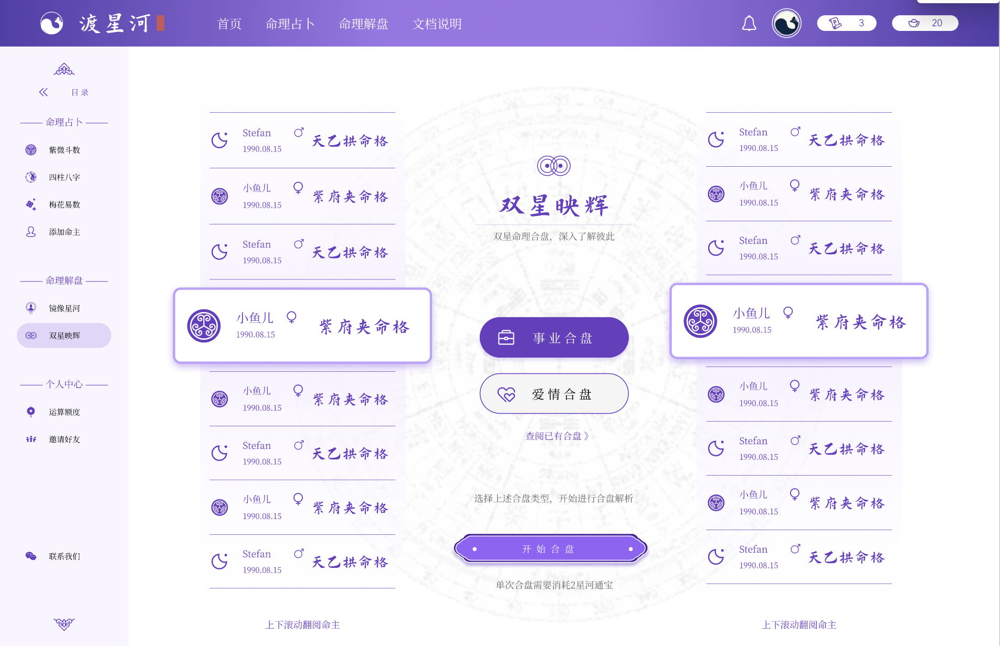

渡星河交互界面设计
围绕玄学内容产品的数字化体验，从高保真界面到IP形象快设并行推进
Interface + IP Rapid Design
项目背景
项目面向“内容咨询 + 角色叙事”体验，目标是在较短交付周期内形成可展示、可评审、可继续迭代的高保真界面方案。产品表达兼顾东方叙事语境与现代数字界面语法。

渡星河项目视觉封面
设计重心
- 建立首页到核心咨询流程的视觉一致性，统一信息层级与动线节奏。
- 将“镜像自我、星河叙事”等抽象概念转化为可交互界面表达。
- 并行探索IP角色气质，提供产品品牌感的快速方向验证。
关键决策
决策 1：优先做“关键路径高保真”而非全量铺开，先确保用户第一屏、提问入口、FAQ与咨询流程可连续讲清。
决策 2：IP与UI同步推进，避免后期“界面完成但品牌感缺位”的返工。
决策 2：IP与UI同步推进，避免后期“界面完成但品牌感缺位”的返工。
最终产出
输出了可交付的高保真界面资产与IP方向草案，为后续工程实现、内容接入与视觉深化打下基础。该项目也成为“快速定义风格 + 快速验证体验”的方法实践样本。